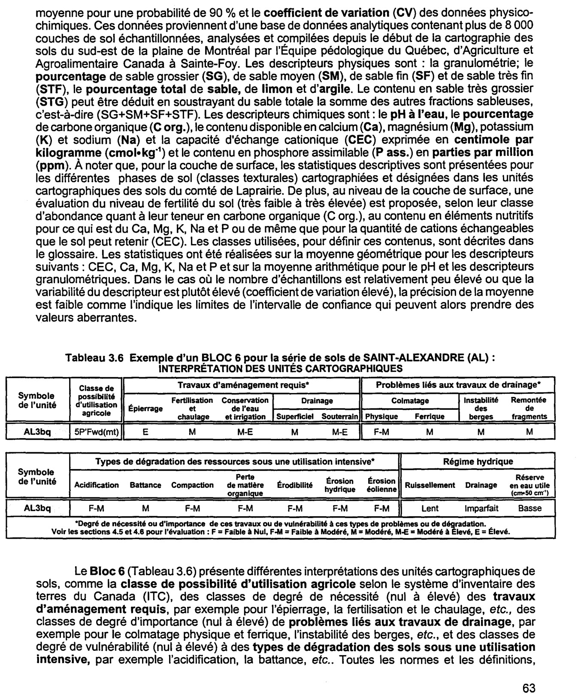

Identification & Caractéristiques Générales
Les sols de la série de Saint-Alexandre se sont développés sur des dépôts morainiques ou fluvio-glaciaires formant de larges cordons et des replats au sein de la plaine étale de la vallée du Saint-Laurent. Le matériau parental est constitué d'un till squelettique-loameux d'origine mixte, caractérisé par une forte proportion de fragments grossiers. La topographie est plane à faiblement inclinée, avec des pentes variant de 1 à 5 %. Le substratum rocheux, constitué de schiste argileux appartenant aux groupes d'Utica ou de Lorraine, se situe généralement à une profondeur supérieure à 120 cm, bien qu'il puisse ponctuellement remonter entre 60 et 120 cm sous la surface.
Le profil pédologique, dont le solum atteint une profondeur de 50 à 80 cm, présente un drainage naturel imparfait à mal drainé. La morphologie se caractérise par la présence de traits gleyfiés apparaissant entre 20 et 50 cm de profondeur selon les variants hydriques et la présence de nappes temporaires. La texture de surface varie du loam au loam sableux, souvent humifère ou graveleux, tandis que le sous-sol et le substratum montrent une charge en fragments grossiers (graviers et cailloux) variant de 35 à 70 % en volume, parfois accompagnée de pierres de surface excédant 25 cm de diamètre. La réaction du sol est variable : les profils typiques présentent une acidité allant d'extrême à moyenne en surface et en sous-sol, alors que les variantes calcaires affichent une alcalinité modérée à forte dans les horizons inférieurs, la profondeur des carbonates s'établissant entre 30 et 90 cm.
Sur le plan agronomique, ces sols sont principalement exploités pour les grandes cultures et les cultures fourragères, bien qu'une proportion significative demeure sous couvert forestier. Les principales contraintes à la mise en valeur agricole résident dans la pierrosité de surface, la charge élevée en éléments grossiers dans le profil ainsi que l'imparfait drainage naturel qui restreint la portance et l'aération printanière. L'installation d'un réseau de drainage souterrain adéquat est généralement requise pour optimiser les rendements. De plus, la gestion agronomique doit intégrer des pratiques de travail du sol adaptées à la pierrosité et, dans le cas des profils non calcaires, des interventions régulières de chaulage pour corriger l'acidité et maintenir la fertilité chimique.
Classification Taxonomique & Environnement Pédologique
| Ordre Pédologique | Brunisolique |
|---|---|
| Grand Groupe (SCSS) | Brunisol dystrique |
| Sous-Groupe Taxonomique | Brunisol dystrique gleyifié |
| Famille Pédologique | Squelettique-loameuse, mixte sableux, alcalin (calcaire) |
| Mode de Dépôt Parental | Morainique |
| Classe de Drainage Naturel | Imparfaitement drainé |
| Régime Thermique & Humidité | Doux / Humide |
Description Morphologique du Profil Type
Séquences génétiques des horizons pédologiques caractérisant le profil type représentatif de la série Saint-Alexandre :
Profil forestier / boisé — Comté de Chambly
✓ Source : Comté de Chambly — Page 100Couleur Munsell : 10YR 2/1
Structure & Consistance : Polyédrique à granulaire
Description morphologique : Matière organique partiellement décomposée; noire (10YR 2/1); consistance très friable; modérément poreux; limite nette, régulière; réaction extrêmement acide.
Couleur Munsell : 5YR 6/2
Structure & Consistance : Granulaire
Description morphologique : Loam sableux graveleux; gris rosé (7,5YR 6/2); structure granulaire, fine, faiblement développée; consistance très friable; modérément poreux; fragments grossiers constitués de graviers; limite nette, irrégulière; réaction extrêmement acide.
Couleur Munsell : 10YR 4/3 (matrice), 10YR 4/6 (marbrures)
Structure & Consistance : Polyédrique à granulaire
Description morphologique : Sable loameux très graveleux; brun à brun foncé (10YR 4/3); marbrures brun jaunâtre foncé (10YR 4/6), fréquentes, moyennes, distinctes; particulaire; consistance très friable; très poreux; fragments grossiers constitués de graviers et cailloux; limite nette, régulière; réaction très fortement acide.
Couleur Munsell : 10YR 5/3 (matrice), 10YR 4/6 (marbrures)
Structure & Consistance : Polyédrique à granulaire
Description morphologique : Sable loameux très graveleux; brun (10YR 5/3); marbrures brun jaunâtre foncé (10YR 4/6), nombreuses, grossières, distinctes; particulaire; consistance très friable; très poreux; fragments grossiers constitués de graviers et cailloux; limite nette, régulière; réaction fortement acide.
Couleur Munsell : 10YR 5/4 (matrice), 10YR 5/6 (marbrures)
Structure & Consistance : Polyédrique à granulaire
Description morphologique : Sable loameux graveleux; brun jaunâtre (10YR 5/4,5); marbrures brun jaunâtre (10YR 5/6), nombreuses, grossières, faibles; particulaire; consistance très friable; peu poreux; fragments grossiers constitués de graviers et cailloux; réaction moyennement acide.
Profil cultivé (agricole) — Comté de Chambly — Variante calcaire
✓ Source : Comté de Chambly — Page 102Couleur Munsell : 10YR 3/1
Structure & Consistance : Granulaire
Description morphologique : Loam; gris très foncé (10YR 3/1); structure granulaire, moyenne, modérée à forte; consistance très friable; modérément poreux; racines abondantes, fines, verticales; limite nette, ondulée; réaction neutre.
Couleur Munsell : 5Y 5/2 (matrice), 5Y 5/6 (marbrures)
Structure & Consistance : Granulaire
Description morphologique : Loam sableux caillouteux; brun grisâtre (2,5Y 5/2); marbrures brun olivâtre clair (2,5Y 5/6), rares, fines, marquées; structure granulaire, fine, modérée; consistance meuble; modérément poreux; racines abondantes, fines, non orientées; fragments grossiers constitués de cailloux; limite nette, ondulée; réaction faiblement alcaline.
Couleur Munsell : 5Y 4/2 (matrice), 10YR 4/6 (marbrures)
Structure & Consistance : Polyédrique à granulaire
Description morphologique : Loam sableux graveleux; brun grisâtre foncé (2,5Y 4/2); marbrures brun jaunâtre foncé (10YR 4/6), fréquentes, fines, marquées; massif; consistance très friable; modérément poreux; racines peu abondantes, très fines, obliques; fragments grossiers constitués de graviers; limite nette, ondulée; effervescence faible; réaction modérément alcaline.
Couleur Munsell : 10YR 5/3 (matrice), 10YR 4/4 (marbrures)
Structure & Consistance : Polyédrique à granulaire
Description morphologique : Loam sableux caillouteux; brun (10YR 5/3); marbrures brun jaunâtre foncé (10YR 4/4), rares, fines, faibles; massif; consistance meuble; modérément poreux; fragments grossiers constitués de cailloux; limite nette, régulière; effervescence forte; réaction fortement alcaline.
Couleur Munsell : 10YR 5/3 (matrice), 10YR 4/4 (marbrures)
Structure & Consistance : Polyédrique à granulaire
Description morphologique : Loam sableux graveleux; brun (10YR 5/3); marbrures brun jaunâtre foncé (10YR 4/4), rares, fines, faibles; massif; consistance très friable; modérément poreux; fragments grossiers constitués de graviers; limite graduelle, régulière; effervescence forte; réaction fortement alcaline.
Couleur Munsell : 10YR 4/3 (matrice), 10YR 4/6 (marbrures)
Structure & Consistance : Polyédrique à granulaire
Description morphologique : Loam sableux graveleux; brun à brun foncé (10YR 4/3); marbrures brun jaunâtre foncé (10YR 4/6), rares, fines, distinctes; massif; consistance très friable; modérément poreux; fragments grossiers constitués de graviers; effervescence forte; réaction fortement alcaline.
Profils Photographiques & Planches de Terrain
Documents iconographiques, figures pédologiques et coupes de terrain documentées dans les mémoires d'inventaire pour de la série Saint-Alexandre :

Propriétés Physico-Chimiques & Analyses de Laboratoire
| Horizon | Prof. (pces) | pH | C org. % | N % | C/N | Sable grossier % | Sable fin % | Sable tot. % | Limon % | Argile % | Ca éch. | Mg éch. | K éch. | Na éch. | Bases tot. | C.E.C. | Saturation % |
|---|---|---|---|---|---|---|---|---|---|---|---|---|---|---|---|---|---|
| Ap | N | 8 | 8 | 8 | 8 | 8 | 8 | 8 | 6 | 6 | 6 | 6 | 6 | 6 | 5 | 6 | 3 |
| Moy. | 9,0 | 14,4 | 13,6 | 7,2 | 48,6 | 31,3 | 20,0 | 5,4 | 2,67 | 16,00 | 5,5 | 1,05 | 0,25 | 0,08 | 20,2 | ||
| Inf. | 5,1 | 8,4 | 11,5 | 5,7 | 37,4 | 25,3 | 14,0 | 4,8 | 2,05 | 12,55 | 2,9 | 0,51 | 0,14 | 0,06 | 13,9 | ||
| Sup. | 12,9 | 20,4 | 15,7 | 8,8 | 59,9 | 37,4 | 26,0 | 6,1 | 3,40 | 20,32 | 10,0 | 1,78 | 0,37 | 0,11 | 20,0 | ||
| CV | 64,9 | 61,7 | 23,3 | 32,1 | 34,6 | 28,8 | 44,7 | 14,7 | 17,10 | 9,70 | 33,9 | 51,80 | 49,30 | 29,80 | 13,8 | ||
| Classe | F | M | F | F | F | F | TF | ||||||||||
| Bfjgj | N | 6 | 6 | 6 | 6 | 6 | 6 | 6 | 6 | 4 | 5 | 5 | 5 | 5 | 5 | 6 | |
| Moy. | 12,3 | 16,7 | 16,7 | 8,5 | 61,1 | 25,1 | 13,9 | 5,8 | 0,54 | 8,84 | 2,0 | 0,50 | 0,09 | 0,08 | 25,4 | ||
| Inf. | 7,9 | 10,1 | 12,6 | 4,5 | 51,9 | 17,9 | 11,0 | 5,1 | 0,21 | 6,58 | 1,0 | 0,07 | 0,07 | 0,06 | 13,2 | ||
| Sup. | 16,6 | 23,3 | 20,8 | 12,5 | 70,3 | 32,3 | 16,7 | 6,6 | 0,96 | 11,78 | 3,6 | 1,10 | 0,11 | 0,10 | 48,1 | ||
| CV | 43,0 | 48,3 | 29,7 | 57,4 | 18,3 | 34,8 | 25,3 | 16,0 | 47,10 | 12,00 | 37,8 | 87,40 | 20,00 | 28,10 | 23,0 | ||
| Cg | N | 6 | 6 | 6 | 6 | 6 | 6 | 6 | 6 | 3 | 5 | 5 | 5 | 5 | 5 | 6 | 77,6 |
| Moy. | 11,1 | 14,3 | 18,7 | 11,0 | 61,9 | 24,8 | 13,4 | 6,6 | 0,19 | 9,30 | 5,4 | 1,52 | 0,14 | 0,09 | |||
| Inf. | 9,4 | 8,6 | 13,5 | 8,0 | 51,9 | 14,3 | 10,4 | 5,9 | 0,11 | 6,75 | 4,1 | 0,66 | 0,11 | 0,08 | 63,8 | ||
| Sup. | 12,8 | 20,0 | 23,9 | 14,0 | 71,9 | 35,2 | 16,3 | 7,4 | 0,28 | 12,69 | 7,1 | 2,83 | 0,17 | 0,11 | 94,3 | ||
| CV | 18,8 | 48,6 | 33,8 | 32,9 | 19,6 | 51,1 | 27,1 | 13,4 | 22,70 | 12,80 | 13,2 | 47,20 | 23,70 | 18,60 | 5,4 |
Particularités Régionales, Phases & Variantes Pédologiques
Déclinaisons régionales, faciès texturaux, phases d'érosion ou de pierrosité et variantes cartographiées par étude pour de la série Saint-Alexandre :
| Étude Régionale | Symbole | Appellation / Phase / Variante | Différenciation avec la série type (Analyse pédologique) |
|---|---|---|---|
| Comté de Chambly | AL3 |
Saint-Alexandre loam | Modalité modale de référence (type de base de la série). |
AL3p |
Saint-Alexandre loam pierreux | Phase pierreuse (abondance de cailloux et blocs en surface). | |
ALc2p |
Saint-Alexandre variante calcaire loam sableux fin pierreux | Phase pierreuse (abondance de cailloux et blocs en surface); Variante calcaire avec effervescence aux carbonates; Faciès textural plus filtrant (loam sableux au lieu de loam). | |
ALc3 |
Saint-Alexandre variante calcaire loam | Variante calcaire avec effervescence aux carbonates. | |
ALc3hm |
Saint-Alexandre variante calcaire loam humifère mince | Phase mince sur substrat rocheux (< 50 cm); Phase humifère enrichie en matière organique superficielle; Variante calcaire avec effervescence aux carbonates. | |
| Comté de Iberville | AL |
Saint-Alexandre squelettique loameux | Conforme à la série type de référence (caractéristiques texturales et drainage identiques). |
ALbp |
Saint-Alexandre squelettique loameux pente de 2-5% légèrement à modérément pierreux | Phase légèrement à modérément pierreuse (obstruction mécanique modérée); Phase de pente (2-5%) avec risque de ruissellement et d'érosion hydrique accrue. | |
ALp |
Saint-Alexandre squelettique loameux légèrement à modérément pierreux | Phase légèrement à modérément pierreuse (obstruction mécanique modérée). | |
| Comté de Laprairie | AL3bq |
Saint-Alexandre loam 3-8 % de pente très pierreux | Phase très pierreuse limitant le travail aratoire et l'implantation culturale. |
ALc3p |
Saint-Alexandre variante calcaire loam légèrement à modérément pierreux | Phase légèrement à modérément pierreuse (obstruction mécanique modérée); Variante calcaire avec effervescence aux carbonates. | |
| Comté de Rouville | AL3 |
Saint-Alexandre loam | Conforme à la série type de référence (caractéristiques texturales et drainage identiques). |
AL3p |
Saint-Alexandre loam légèrement à modérément pierreux | Phase légèrement à modérément pierreuse (obstruction mécanique modérée). |
Distribution Pédo-Paysagère & Représentativité Cartographique (Couverture PPS 2026)
- Saint-Benoît loam sableux à sable limoneux (SNB) — co-occurrente dans 10 polygone(s)
Aptitudes Agronomiques, Hydropédologie & Conservation des Sols
Indicateurs Hydropédologiques & Vulnérabilité à l'Érosion (BDHP 2026)
Interprétation BDHP : Potentiel de ruissellement modérément élevé. Faible taux d'infiltration, présence d'horizons ralentissant le drainage descendant.
Classement selon l'Inventaire des Terres du Canada (ITC / CLI) : Classe 2w.
- Potentiel agricole : Terroir adapté aux cultures régionales selon la texture dominante et la régie de drainage.
- Contraintes majeures : Imparfaitement drainé. Risque d'engorgement temporaire ou d'excès d'eau printanier.
- Gestion & Aménagement : Drainage souterrain ou superficiel préconisé sur les terres planes. Chaulage et apport organique régulier selon les bilans agronomiques.
- Cultures adaptées : Grandes cultures (maïs, soya, céréales), prairies fourragères et cultures maraîchères selon le contexte géomorphologique.